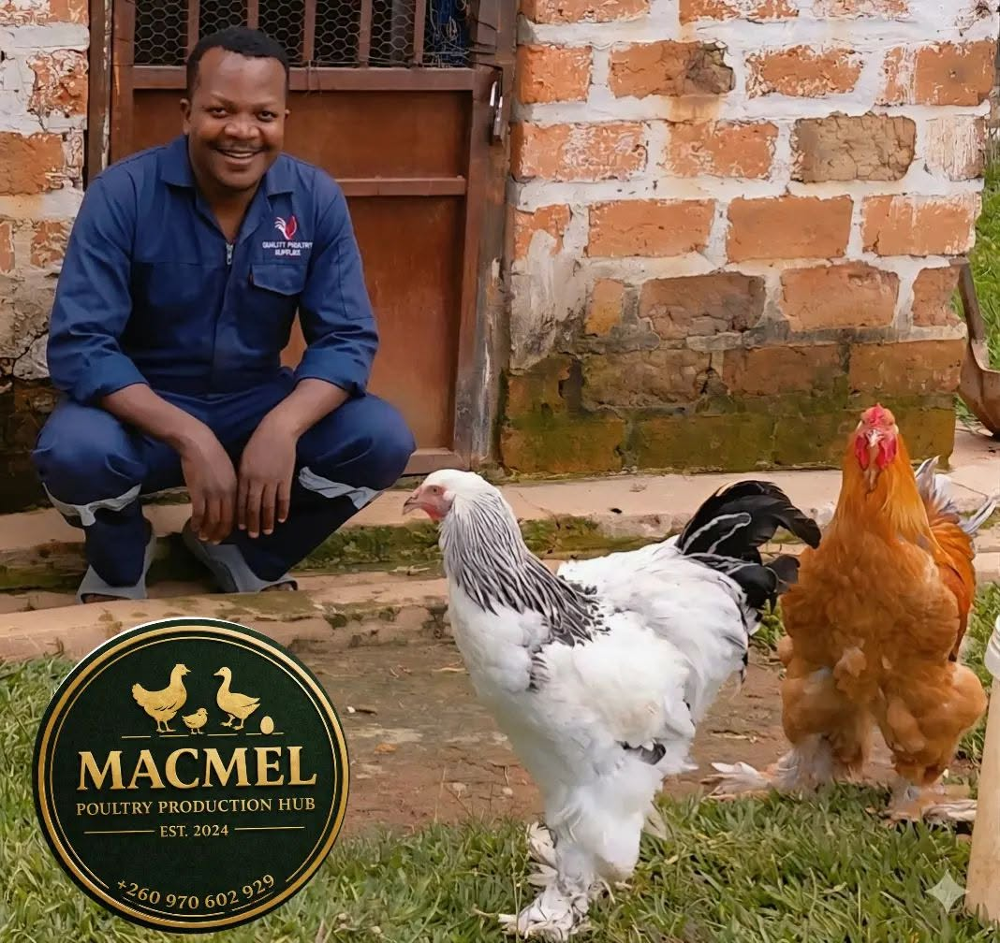
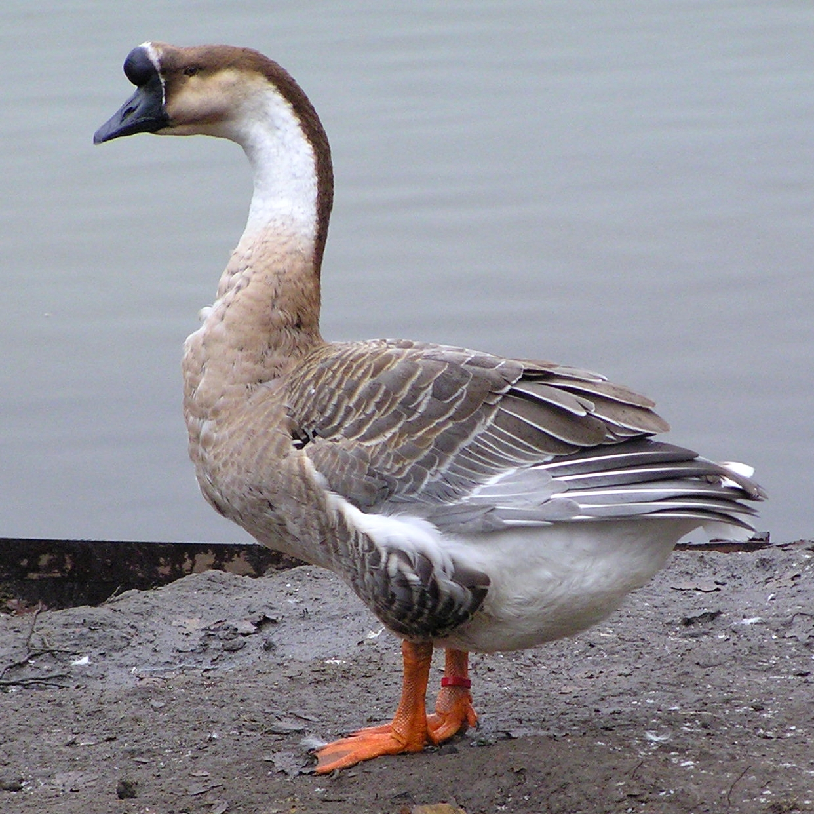

Poultry Farming
Healthy birds, expert care, and daily monitoring ensure consistent poultry quality across every batch.
Growing something good
Macmel Poultry Production Hub delivers fresh poultry, premium eggs, and dependable farm distribution from Chililabombwe to customers across Zambia.
Macmel Poultry Production Hub is the trusted livestock division of Macmel Enterprises. We deliver healthy poultry products with strong farm management, consistent quality, and customer-first delivery.

Integrated poultry solutions for every stage of the value chain.
Healthy birds, expert care, and daily monitoring ensure consistent poultry quality across every batch.
Premium quail and chicken eggs packaged fresh for wholesale and retail customers.
Fast, safe distribution from Chililabombwe with market-ready delivery throughout the region.
Our newly commissioned rabbit department is building a healthy, well-managed line for breeding and table production.
Meet the new departmentWe have commissioned a dedicated rabbit production unit focused on careful breeding, healthy growth, and dependable supply for households, farmers, and food businesses.
A look at the new department as Macmel expands its livestock offering.
Responsible breeding and attentive daily care support strong stock.
Every new litter is handled with patience, hygiene, and close observation.
Explore our products with detailed descriptions and enlarged visuals for each item.

The quail egg is a small, nutrient-dense egg that is prized for its rich flavor and gourmet presentation. These eggs are perfect for hors d'oeuvres, salads, and premium menus because of their delicate size and attractive speckled shell.
Best for: restaurants, retail boutiques, and home cooks who want premium eggs.

The Brahma chicken is a large, dual-purpose breed valued for its tender meat and calm disposition. Raised with balanced nutrition and attentive care, Brahmas provide succulent, flavorful poultry that performs well in premium retail and catering markets.
Best for: high-end restaurants, butcheries, and wholesale buyers.

The Pekin Duck is the most common domestic duck and the most popular breed raised for eating. Known for fast growth and excellent size, Pekins can be processed around 40 days old, often reaching about 7 lbs 🦆.
With careful management, Pekins are also strong layers, producing up to 200 extra-large white eggs per year 🥚✨. They are calm, active birds that do not fly, and they’re both cold and heat hardy, making them a dependable choice for many setups.
Best for: farmers, restaurants, and poultry operations seeking reliable duck stock.

The Black Australorp is an iconic egg-laying chicken breed known for its glossy black plumage and excellent production. This hardy bird lays up to 250 large brown eggs per year and is favored for its calm temperament and easy care.
Best for: small farms, breeders, and households wanting dependable layers.

Healthy live quails raised for breeding, smallholder farming, and premium table poultry. These birds are active, well-conditioned, and ready to thrive in your flock.
Best for: quail farmers and livestock enthusiasts seeking premium starter stock.
Follow the Macmel story from established poultry lines to the commissioning of our new rabbit department.
Strong foundations begin with attentive care. Meet the Brahma flock at the heart of our poultry work.
Daily routines matter. Our Pekin ducks are raised with consistent feeding and hands-on farm management.
Small birds, careful systems, dependable supply. This is quail production at Macmel.
Macmel opens its next chapter with the commissioning of a dedicated rabbit production department.
Responsible breeding and close observation help us build a healthy, reliable rabbit line.
Every new litter is a promise of growth, handled with patience, hygiene, and care.
Meet the team whose daily knowledge and commitment keep the hub moving.
A short reflection from the Macmel team on care, consistency, and growth.
Our poultry story continues through steady growth and thoughtful flock management.
Good production starts with dependable routines and well-cared-for birds.
Explore the variety of birds and opportunities taking shape across the hub.
Hatching is the first step in a careful journey from new life to healthy stock.
A recent look at the activity, movement, and energy across Macmel Poultry Production Hub.

Our people stay close to the birds, the routines, and the customers we serve.

Our interest in poultry keeps growing as we learn from a wider range of birds.

Quails and their eggs remain an important part of our practical, local production story.
Our partners rely on Macmel Poultry Production Hub for quality, reliability, and fast service.
“Macmel Poultry consistently delivers fresh eggs and poultry products on time. Their attention to quality and customer service makes them our top supplier in the region.”
Ready to place an order, schedule a farm visit, or discuss a partnership? Reach out and we’ll respond quickly.